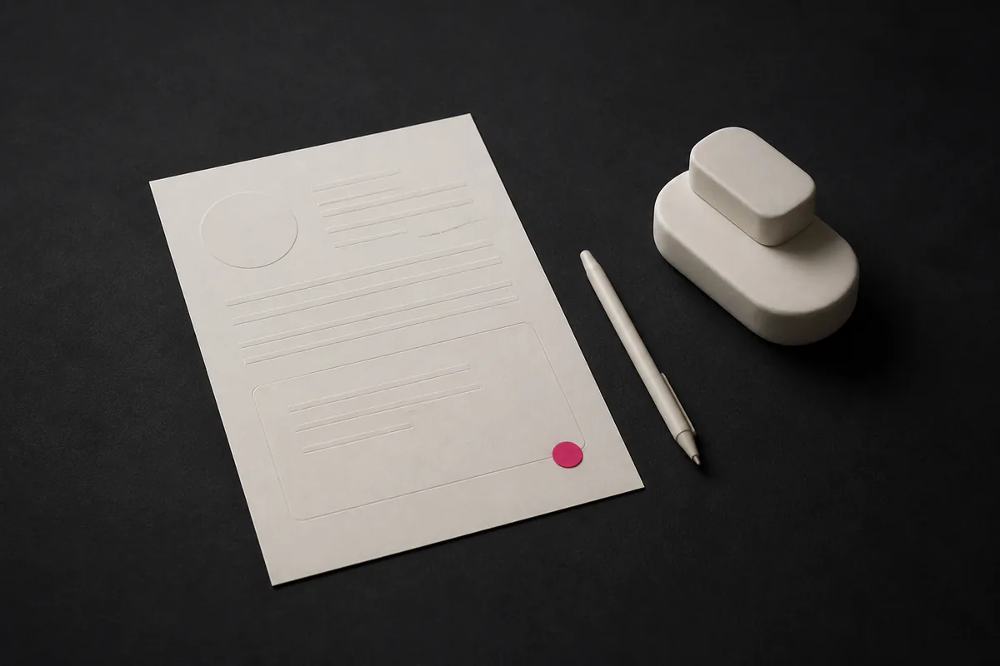
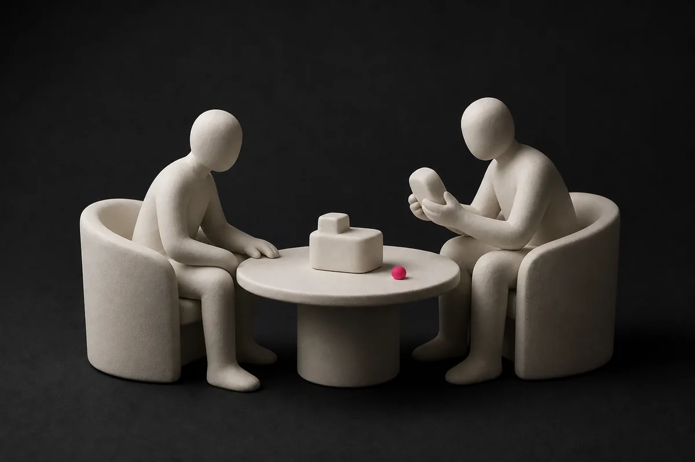
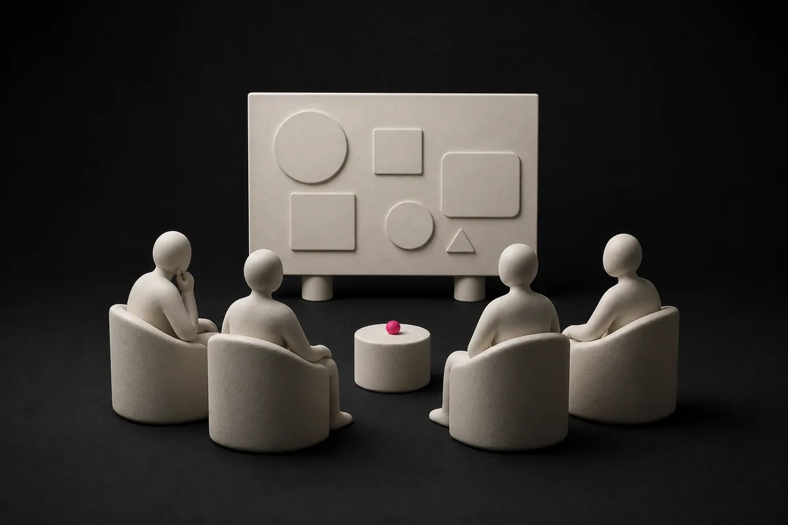
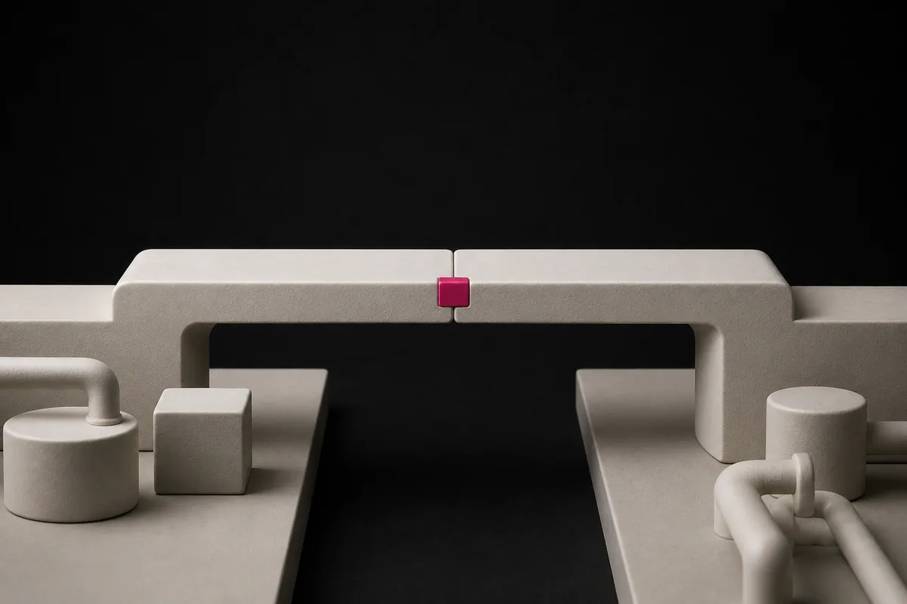

Partners pick.
A partner company selects the use case. That single fact is why the POC has an owner, a site and a decision attached to it from day one.
SPARK runs MVP+ startups through a thirteen-week POC built around a use case chosen by a partner company. No equity. No participation fee. Eleven cohorts have run to date.
SPARK brings partner demand, startup readiness, clear execution, and a commercial path into alignment before a POC begins.
A partner company selects the use case. That single fact is why the POC has an owner, a site and a decision attached to it from day one.
SPARK is for MVP+ companies. The product has to survive an industrial environment, not a slide.
Our POC Center scopes, schedules and runs the test on partner assets, with a dedicated project team.
The POC is designed to grow into a commercial relationship — equity-free and fee-free.

Apply with an MVP+ product and a clear account of what it does and where it currently breaks.

We assess technical readiness, then circulate strong candidates to the partner companies whose operations they touch.

A partner names the constraint they want tested. The use case is agreed before the cohort opens.

Baseline, metric, site, duration and success threshold are fixed in writing with the partner and the field team.
Site visits, "meet the corporate" sessions and 1:1 reviews on a three-week cadence, ending at a closing event.
Named people accountable for running your POC, including the POC Center Manager and the relevant domain manager.
Designated workshops and vehicles, logistics warehouses, PDI and test areas, production lines and an instrumented electric test vehicle.
Mentors and ecosystem experts drawn from a pool of 40+, matched to your domain rather than assigned at random.
Thirty-four portfolio companies. Alumni remain in the deal flow for new partner needs after their cohort ends.
No. SPARK is equity-free and there is no participation fee.
MVP+. The product must be functional enough to be installed and measured in an industrial environment.
A partner company does, before the cohort opens. We do not run POCs without a partner-defined need.
Thirteen weeks from opening event to closing event, with 1:1 reviews on a three-week cadence throughout.
The result supports a rollout decision. A successful POC is designed to grow into a commercial relationship with the partner company.
No. Israel is our primary POC environment. European startups can also apply through Q2Scale with EIT Global Outreach.
Accepted startups commit their best efforts to work with the programme team and partners, and to participate in the sessions agreed at the start of the programme.